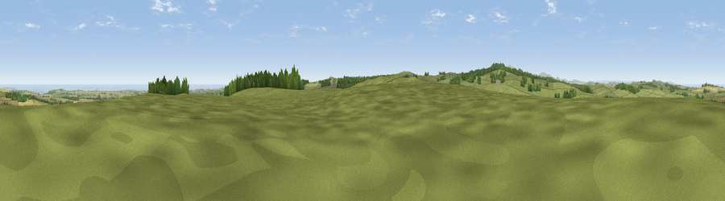

Viewpoint near Warenford
#5045 in England · top 26% of its area beats it · near WarenfordWhere it is
The exact computed spot (NU 11800 26988). Click the marker for map links.
The view, rendered

A 360° render of this exact spot computed from the terrain model, tree cover and land cover — summer colours, afternoon light, calibrated against photographs of famous viewpoints. Real trees, hedges and buildings will differ in detail.
The panorama
Grey silhouette: terrain skyline in each direction (720 bearings, Earth curvature and refraction included). Dashed green: skyline with trees (+15 m) and buildings (+8 m) as obstacles. Blue strip: how far the ground is visible on each bearing.
Where the view opens
Wedge length = distance to the farthest visible ground on that bearing (vegetation-aware). Rings at 10, 25 and 50 km.
What fills the view
60% grassland · 17% cropland · 12% woodland · 10% water
Angular shares of the visible panorama (visual magnitude), not map area. Landscape diversity 0.49 (0–1 Shannon).
Key numbers
More beautiful places nearby
The staircase of upgrades: each row has a higher view potential than everything closer. Driving times are estimates from straight-line distance, calibrated against real road routing — check an actual route before setting out.
| Place | Direction | Drive | Score |
|---|---|---|---|
| Viewpoint near Warenford | E · 1 km | ~3 min | 73.4 |
| Viewpoint near Warenford | N · 4 km | ~9 min | 77.3 |
| Viewpoint near Chillingham | WSW · 4 km | ~9 min | 88.1 |
| Viewpoint near Easington | SSE · 124 km | ~148 min | 90.2 |
| The Knoll | S · 542 km | ~489 min | 91.0 |
55.53647, -1.81459 · source: screening · position refined by local search. Computed location — check access rights before visiting.